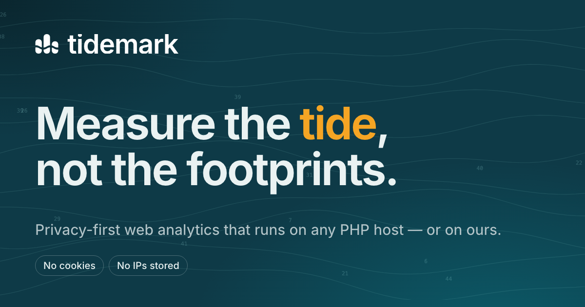

Brand guide for Tidemark: privacy-first web analytics that runs on any PHP host — or on ours. Everything on this page is built from the same tokens and components as the product.
What the category looks like, where Tidemark sits in it, and what we say.
#4B38D8) over dark navy; Fathom, Pirsch and Matomo sit in the same blue family. A warm teal with an amber signal is unclaimed.Sources: Brandfetch — Plausible (unofficial palette), Fathom brand page, comparison of Simple Analytics, Plausible, Umami and Fathom. Third-party sources are commentary, not official brand data.
Tidemark — a tidemark is the line a tide leaves on a shore or a harbor wall: a record of how high the water reached, kept without keeping the water. That is what the product does for a website. It keeps the line — aggregate traffic — and never the footprints: no individual visitor is followed, profiled or stored.
For website owners who want to understand their audience without surveilling it, Tidemark is privacy-first web analytics that installs on any PHP host in minutes — or runs hosted. Unlike hosted-only alternatives, you can own your data and your server from day one.
Readable numbers, quiet design. You should reach the bottom of your data in one screen, not one afternoon.
No cookies, no stored IP addresses, a visitor hash that rotates monthly. Nothing to disclose because nothing is kept.
Upload a zip to a $3 shared host, or use ours. Same product, same data model, your choice of where it lives.
Tidemark is privacy-first web analytics for people who would rather understand their audience than track it. No cookies, no stored IP addresses. Upload it to ordinary shared hosting in minutes, or let us host it. Fast, readable, and calm to use.
Calm, plain-spoken, precise. We sound like a good harbor pilot: unhurried, exact, and never selling.
Short sentences, common words. Say what it does, then stop.
Real numbers and real limits. If something isn't done, say so.
No hype, no exclamation marks, no “revolutionary”. The product speaks for itself.
The sea metaphor lives in brand moments (taglines, empty states) — never in UI labels or error messages.
| Use | Tidemark — capitalized in sentences and UI. “Tidemark Cloud” for the hosted product. |
| Avoid | “TidemarkAnalytics”, “Tidemark Analytics™”, “UseTidemark”, “tidemark” (lowercase appears only in the logo). |
| Say | “visitors”, “visits”, “pageviews”, “events”. Don't rename standard metrics with nautical terms. |
| Domain | When registered, prefer tidemarkanalytics.com, tidemarkstats.com or withtidemark.com. The bare .com and the use/try/get variants were taken when checked; re-check before buying. |
Three pier pilings standing in a tide, with the tide line — the high-water mark — cut across all of them at one height. That is what a tidemark actually is, and the pilings double as the bars of a chart, which is what the product does. Pictorial, no letters, no box. It is single-color by design: the tide line is negative space, so the same logo works in ink or white on any surface, from a favicon to a stamp.
#0B1B22 on light surfaces, white on dark or brand colors — nothing else. In the app the logo inherits the text color.Stretching · recoloring · effects · low-contrast backgrounds · rotating. Use the supplied variants instead.
Deep-water neutrals carry the interface. Tide teal is the voice; Buoy amber is the signal — used for cautions, the second chart series and the odd highlight (the “tide” in headlines) — never as a second brand color. The logo itself is single-color.
≈ 70% neutral surfaces · 12% lines/secondary · 12% Tide · 4% Trench · 2% Buoy
| Foreground | Background | Ratio | Result |
|---|
--accent: #0e7c86; /* Tide — buttons, links, focus (dark: #4fc3be Shoal) */ --signal: #f5a524; /* Buoy — logo tide line, caution, highlights */ --series-1: #0891a0; /* Lagoon — primary data series (dark: #1fa3a8) */ --series-2: #d97706; /* Buoy deep — secondary series (dark: #cf7f0c) */ --bg: #f4f7f7; --surface: #fff; --ink: #0b1b22; /* dark: #081418 / #0e1e24 / #eaf2f2 */ /* Source of truth: public/assets/app.css · logo set: scripts/build-brand.py */
Inter (variable, SIL OFL), self-hosted — no third-party font requests. One family keeps the product quiet; hierarchy comes from size, weight and spacing.
Rule: proportional figures for big standalone numbers; tabular only where numbers align in columns.
Depth contours with scattered depth numbers — the texture of a nautical chart. Use it as a quiet background (login, hero, social, empty states), always at low contrast and never behind body text.
Lucide only — 24-px grid, 2-px round-cap strokes, sized 14–20 px, inheriting text color. No filled icons, no emoji as UI.
Prefer none. If needed: calm water, horizons and charts in desaturated teal; no stock people, no “growth arrow” clichés, no dashboards-on-laptops mockups with fake data.
Live components from app.css — the guide and the product can't drift apart.
data-perf="true" to the tracking script to collect Core Web Vitals.Everything is generated from scripts/build-brand.py (logos, motif) and scripts/export-brand-png.sh (PNGs). Edit the script, re-run, commit.
| File | Use |
|---|---|
| resources/brand/logo/tidemark-horizontal-{ink,white}.svg | Primary lockups, single color |
| resources/brand/logo/tidemark-stacked-{ink,white}.svg | Square-format lockups |
| resources/brand/logo/tidemark-mark-{ink,white}.svg | Bare mark, single color |
| resources/brand/logo/tidemark-mark.svg | Tile mark — favicon, avatars |
| resources/brand/logo/tidemark-wordmark-{ink,white}.svg | Wordmark alone |
| resources/brand/logo/tidemark-app-icon.svg | Full-bleed square for iOS / Android icons |
| resources/brand/png/mark-{16…512}.png | Raster marks, transparent |
| resources/brand/png/social-card.png | 1200×630 Open Graph / social preview (source: social-card.html) |
| resources/brand/pattern/contours-*.svg | Depth-contour background, light and dark |
| public/favicon.ico · assets/favicon.svg · assets/apple-touch-icon.png · assets/icon-192/512.png | Shipped with the app |
